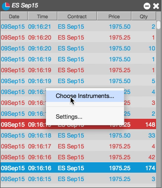
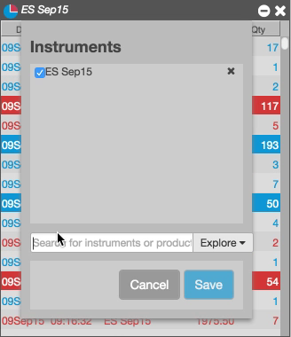
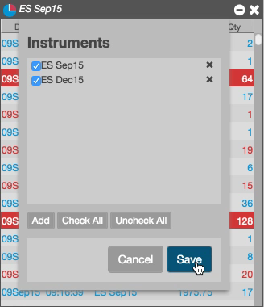
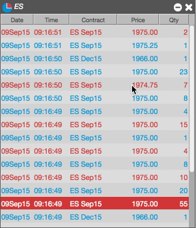
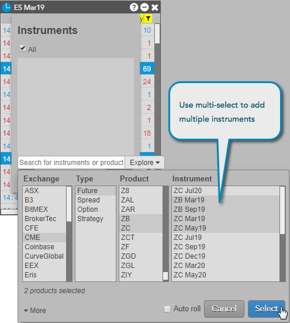

You can populate a Time & Sales widget with one or more products and instruments. You can include single instruments, multiple instruments, all instruments in a product, as well as instruments from multiple products.
Note: A Time & Sales widget supports a maximum of 5,000 instruments.
From the context menu, select Choose Instruments.

Click Add, and use the search and explore functionality to locate the instrument or product to add.

Check the instruments you want to include, and click Save.

Time & Sales shows activity for all of the selected instruments.

You can also use your system's multi-select feature to choose multiple products or instruments in the Market Explorer. The following example uses multi-select to add instruments for the ZB and ZC products.
